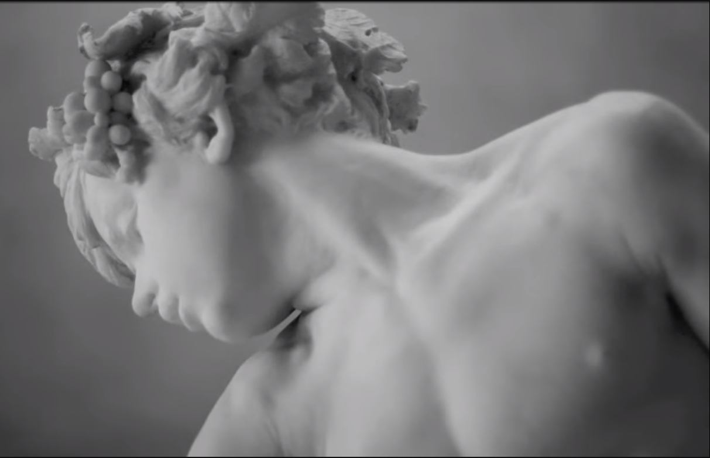
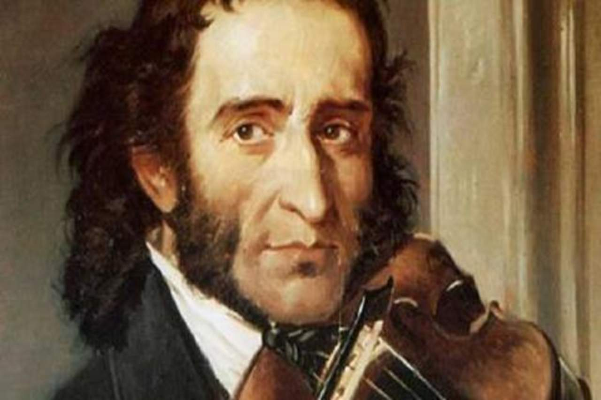
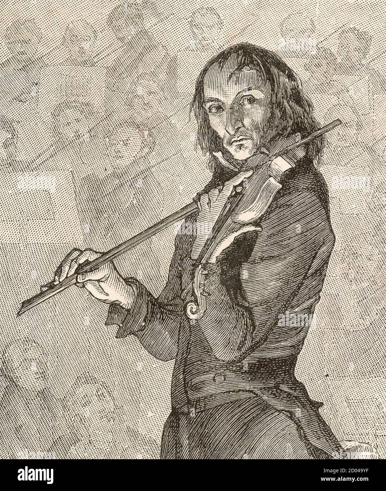

5 canciónes favoritas:
Es el título de una colección de doce conciertos compuestos por el compositor y músico barroco Antonio Vivaldi entre 1712 y 1713
Canción:
Giuseppe Tartini
Considerado uno de los más importantes de la historia y uno de los mayores representantes del Romanticismo
Nocturne in c sharp minor for violinmás conocido como Wolfgang Amadeus Mozart, fue un compositor, pianista, director de orquesta y profesor del antiguo Arzobispado de Salzburgo
Eine kleine Nachtmusik
Es considerado uno de los arquetipos del virtuosismo del violín y uno de los máximos representantes del movimiento instrumental del Romanticismo.
Caprice no.24
Es considerado uno de los arquetipos del virtuosismo del violín y uno de los máximos representantes del movimiento instrumental del Romanticismo.
La campanella